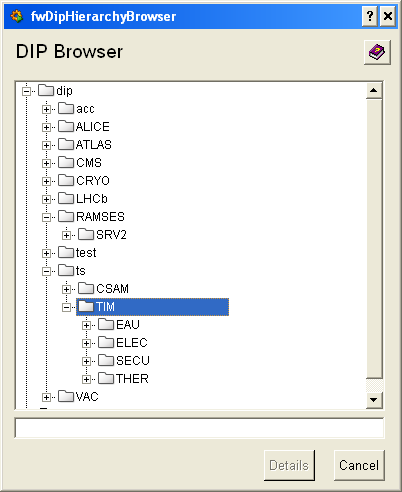

| Panel Name |
fwDipHierarchyBrowser.pnl |
|
| Introduction |
This panel is used to display the fragment of the DIP hierarchy tree. It can be used to invoke the view of the publication details and to select a publication or a publication field. | |
| Instructions |
The main part of the panel is filled with the TreeView containing the
DIP hierarchy starting from $sInitialAddress
. Below is the list of common symbols that may be prefixing the publication name:
Navigation is rather straightforward - basically it is only clicking on the nodes. There is a text box below the TreeView which contains the address of currently selected node. Clicking on the "Details" button will invoke the panel with the detailed information about selected publication (if a publication node has been selected). Clicking the add button (if visible - $bBrowser) will return data about selected publication to the invoking panel. |
|
| Restrictions | To update the list of current configuration data points,
you must manually press the "Refresh" button. This is important to
ensure that you are viewing the latest information. |
|
|

|
| Dollar Parameters | ||
| Name | Description | |
| $sInitialAddress | Specifies the address of the root of the DIP hierarchy to display | Required |
| $sApiManagerDp | Contains the DIP API Manager config DP - which is needed to execute a DIP query. | Required |
| $iResultType | The ResultType of the publication under $sInitialAddress. ResultType is being returned by the DIP query. | Required |
| $sChildName | Contains a dyn_string with all the names of children of the publication at $sInitialAddress converted into a string. | Required |
| $iChildType | Contains a dyn_int with all the child types of the publication at $sInitialAddress converted into a string. | Required |
| $bBrowser | Specifies whether the "add" button is visible
TRUE - The "add" button is hidden. FALSE - The "add" button is visible. |
Required |
| $noDetails | If defined then the "details" button is hidden. | Optional |